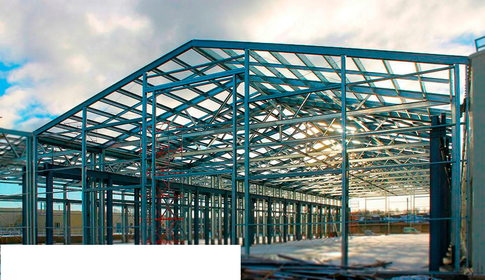

Carlos Restrepo
Estas estructuras por lo general están hechas de acero inoxidable para dar un soporte mayor a la estructura. Si quieres cambiar o si es necesario se cambia el material establecido por nosotrosctos.
Las fachadas metálicas son una excelente opción para cualquier edificio. Son resistentes, duraderas y versátiles, lo que las convierte en una solución ideal para una amplia gama de aplicaciones. El metal es un material muy resistente a la corrosión, el impacto y las condiciones climáticas extremas. Esto hace que las fachadas metálicas sean una opción muy duradera para cualquier edificio
Las pérgola suelen estar hechas de madera o metal. Las pérgolas de madera son más tradicionales y aportan un toque rústico a cualquier espacio. Es una excelente opción para relajarse, comer al aire libre o realizar actividades al aire libre
Las estructuras metálicas son una excelente opción para cualquier proyecto, ya sea de construcción, industria o comercio. son resistentes, duraderas y versátiles lo que las convierte en una solución ideal para una amplia gama de aplicaciones como lo son canoas, techos, columnas, vigas, pasamanos, barandas encerramientos, ventanas y contenedores